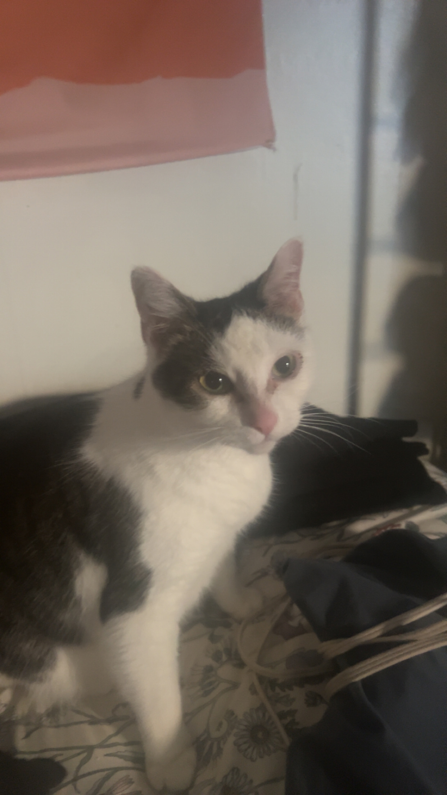

Hello! Welcome to my webpage where you can learn all about me and my interest!
My name is Jerimiah. I am currently a full-time student at Mountain Gateway Community College, and I'm studying IT/Cybersecurity to hopefully get an associates degree! Although I may transfer to a 4 year program but I'm undecided. I am also looking for a part-time job due to the semester being almost over, and I think even as a full-time student I could manage working part-time when I start back in the fall
I was born in North Carolina however my family moved to Virginia when I was extremely young, and I've been here ever since! I've mainly stayed in Alleghany county but at one point I was living in Waynesboro.
I have two siblings, a brother and a sister! Both younger. My brother is also a student here at MGCC! My mom works as a Med Tech at a group home in Clifton Forge, and My dad used to be a roofer.
I've mainly worked in kitchen settings over the years, however my favorite job has been working customer service in a retail setting (Kroger). I just really enjoyed interacting with so many people on a daily basis, and I had a few different roles on the front-end so I never got bored.
We have 5 different pets in the house, but mine specifically is a white and grey tabby cat named Saturn, he's turning 8 this year in June, and is in good health! He's pretty affectionate but he does prefer to maintain his personal space. Other than that both of my siblings have their own cats, and then my parents have two dogs. One of those dogs is a new addition to the family, it's an all black great dane puppy, he's cute but kinda annoying..

I really like things that are mentally or physically stimulating, I think it's good to keep your mind and body active as much as possible, I mean you only get one life! I think things that allow you to be creative are also nice and good for your mental health. So here's a list of some of my hobbies, and then I'll dive a little further into them!
Hiking is a great way to get steps in and it's nice to be in nature, I think it's more fun if you go with someone though
For the past few years I've been pretty inactive, so I thought it was a good idea to get back in the gym and lose some weight and maybe build some muscle if I can ever start eating enough protein.
I played basketball all throughout middle school and I played AAU and my freshman year of highschool I made JV, however my sophmore year I switched to track and soccer, I mainly just shoot around now at the YMCA
In 2021 I really wanted to try and build my own gaming PC and on my 2nd attempt I was successful! The first time I tried I broke the case, out of all things.. Over the years I've upgarded the GPU and added more storage, I need to clean it though, and then I'm thinking of finally upgrading my CPU (this is scary to me) and adding more RAM (praying the AI bubble burst).
I tend to hyperfixate on certain games for months at a time and then switch, I play just about everything though, right now I'm playing a modded version of a game called Project Zomboid which took me forever to get working properly, but was worth it.
Playing music kinda runs in my family as my grandma used to be in a blue grass band called Blue Mountain Mist, and she'd play guitar and sing, so I thought it'd be cool to learn a few songs here and there, although it's been a while since I've played since I need to replace one of the strings that snapped on my acoustic.
I don't have to much to say about cooking, it's just fun and who doesn't like food?
Walking is great for you no matter what but especially if you're trying to lose weight, which I currently am, I just throw in my earbuds and try to get in as many steps as I can.
I really like listening to music and watching shows/movies, it's similiar to what I said about gaming in that I get hyperfixated on certain genres of either or and then stick to that for a couple of months at least. Right now I'm really into Daredevil and I'm trying to catch up so I can watch the new show on Disney Plus 'Daredevil: Born Again' but sadly some of it has already been spoiled for me since I just have to read every comment under posts on Instagram. It's my fault for having eyes I guess.
With music at the moment I'm listening to a lot of indie music, and bedroom pop, artist like 'Big Thief' and 'Joe P' Velvet Ring by Big Thief
My favorite website at the moment is probably Amazon, I have my cart full right now with different PC parts and cleaning supplies for whenever I think it's time to finally upgrade!
Link to Amazon's main pageThis video is very SAD, it's an AMV of 'Grave Of the Fireflies' set to 'Fourth Of July' by Sufjan Stevens